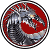

|

|
>> Содержание / Список кланов /
  SteelD SteelD
Полет… кто не испытал этого не поймет.
Кто не знал радости свободы парения на восходящих потоках теплого воздуха, не сможет понять и горечь воспоминаний изломанного дракона.
Великие Боги Тьмы… разве мог подумать Ратибор, что когда- нибудь будет беспомощно лежать на скале и тоскливо смотреть на парящих в небе сородичей. Дракон, который больше не сможет летать… эта кара была сурова.
Десять долгих лет, прикованного к этой скале тяжелой адамантитовой цепью, Ратибора пытали невыносимой пыткой: видеть пролетающих мимо драконов. Здоровых, могучих, красивых в своем величии и великих в своей призрачной свободе.
Ратибор дернулся. Кривая пасть растянулась, почти в человеческой усмешке. Свободе… сколько раз он слышал эти слова от своих сородичей, но ни разу не выказал раскаяния своим поступкам. Дух его оставался так же тверд, как и десять лет назад: - это не свобода!
Пусть они летели в небе, а он лежал прикованный к скале над морем, их цепи были куда прочнее его оков, ибо охота – пуще неволи. Их служба Архангелам была безупречна, и за многие поколения только один дракон осмелился бросить вызов хозяевам душ небесного племени.
Ратибор осторожно, стараясь не опираться на сломанное крыло – поднялся на все четыре лапы и вытянув шею – заревел. Это был рев не отчаяния и страха, а лютой ненависти и обещания поквитаться с обидчиками. Именно с этим криком он бросился на одного из Архангелов десять лет тому назад. Плотина контроля не выдержала, когда Ратибор понял, что его подругу – дракониху тащат силком к молодому дракону, что обладал изумительно чистым белым окрасом.
Взбешенному Ратибору мало показалось отбить спутницу жизни. Он убил одного из повелителей драконьего племени.
Кара была быстрой и в неравном бою он падал и падал вниз, отбиваясь пламенем и когтями от налетающих ангелов. Это падение длилось бесконечно долгие сутки. Целые сутки небо над миром, где обитали драконы, полыхало алым. Но никто из сородичей не бросился на выручку Ратибору. Даже подруга…
В конце концов, избитого дракона с изломанными крыльями бросило на эту скалу над морем. Здесь его уже ждали паладины Света, коим было приказано сковать пепельного дракона цепью, что не поддавалась даже драконьему пламени. Кормить его должны были самые слабые из драконьего племени.
Так он и лежал на своей скале, изнывая от вида парящих в небе драконов, обреченный на вечную ненависть…..
...Много лет спустя мне рассказали историю о всадниках на стальных драконах.
Их длинные пики пронзают небо и в стремительном полете эти воины обрушиваются с неба на своих врагов.
Первый дракон сдержал слово и его потомки стали верным оружием Тьмы.
Но и тьма выполнила свою клятву и пламя борьбы в потомках Ратибора горит неугасимой яростью.
Официальный сайт клана: http://www.steeldragons.ru
|
 |
|